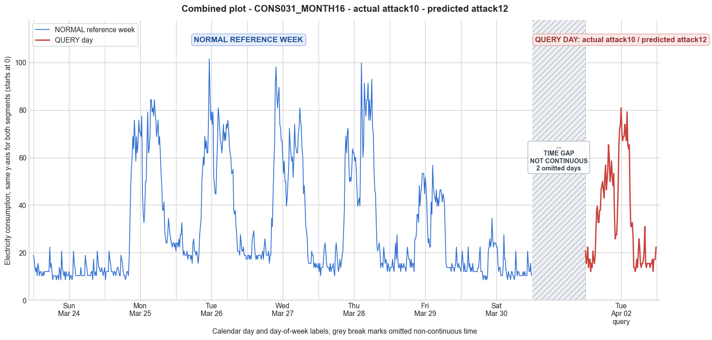

CONS031_MONTH16 · actual attack10 · predicted attack12
- Pair
- CONS031_MONTH16
- GT
- attack10
- Prediction
- attack12
- Binary GT
- attacked
- Binary Prediction
- attacked
- Source
- E010
- Parse
- stored
- Date
- 2013-04-02
- Weekday
- Tuesday
- Latency
- 3.95 min
- Tokens
- 14973

Final output
Classification: - Manipulated Identified Attack: - Most Likely: Attack 12 - Confidence: Medium - Reasoning: The query day shows a significant consumption spike in the early morning (3:30–8:00) with values reaching 30–65, whereas all reference weekdays (including the reference Tuesday) exhibit low and stable consumption (<30) during these hours. This temporal shift changes the trend pattern entirely. The overall daily mean (35.00) is also notably lower than the reference Tuesday (42.26) and other weekdays (38–42), indicating a lower total consumption. Such a combination of altered trend and reduced magnitude matches the definition of Attack 12, where the attacker substitutes their profile with that of a lower-consuming user. Attack 10 (reversal without total reduction) was ruled out because the query day’s total consumption is clearly reduced relative to typical Tuesdays. Attack 4 (partial period reduction) was considered but would preserve the original peak timing; the abnormal early morning spike cannot be explained solely by a reduction without a genuine pre-existing peak, which is absent from all reference days. Attack_Behavior_Explanation: - The attacker replaced the genuine consumption pattern with that of a different, lower-consuming user. The queried day’s readings follow a completely different intra-day shape: a morning ramp‑up starting around 3:30 AM with values of 29–65, a moderate midday plateau, and a lower evening peak, whereas the reference Tuesday (and all other weekdays) shows a late‑morning to afternoon peak and very low overnight usage. The substitution reduces the average consumption from ~42 to 35 and flattens the daily profile, changing both the trend and the magnitude. - Possible technical causes: false data injection, where the attacker impersonates another smart meter or replays a lower-consumption profile.
Prompt
You are a domain expert in smart grid security and electricity theft analysis, with deep knowledge of non-technical loss (NTL) attack patterns in smart meters. You are given: 1. A plot of one week of original (normal) energy consumption for a smart meter, provided as context for the customer's typical consumption behavior. 2. A plot of one day of energy consumption for the same smart meter, which may or may not be manipulated. Below are common attack types, each defined by how consumption values are altered, their impact on magnitude and trend, and their possible technical causes. Attack 0: Generated by replacing all electricity consumption samples with zero values for the entire observation duration. Simulates a scenario where no energy usage is reported at all. May be caused by a total meter bypass or severe meter malfunction. Completely eliminates both the trend and magnitude of the consumption profile. Attack 1: Multiplies the actual energy consumption by a constant random value between (0,1). The lower the factor, the higher the severity. Can be triggered by meter bypass, magnetic interference, reverse current, and false data injection. The consumption trend remains the same but the magnitude is uniformly reduced. Attack 2: Generated by replacing consumption samples with zeros for a random duration. Also known as an on-off attack. Can be caused by full meter bypass, false data injection, and reverse current. Changes both the trend and amplitude. Attack 3: The actual consumption is multiplied by different random factors between 0 and 1, with a unique factor per sample. Similar to Attack 1 but the scaling factor varies per reading. Caused by meter bypass, magnetic interference, and reverse current. Changes both the trend and amplitude. Attack 4: Simulates energy theft over a randomly selected period within the observation window. All measurements in that period are reduced. Caused by meter bypass, magnetic interference, reverse current, and false data injection. Changes both the trend and amplitude. Attack 5: Each sample is replaced by a false value obtained by multiplying the average normal consumption by a random variable between 0 and 1, with a different variable per sample. Caused by false data injection. Produces a completely different pattern from the original consumption profile, changing both trend and magnitude. Attack 6: A random cut-off point is selected and all consumption values above it are replaced by that cut-off value. The attacker avoids exceeding a predefined maximum limit. Mainly caused by false data injection. Changes both the trend and amplitude. Attack 7: A random cut-off point is subtracted from each sample; if the result is negative, zero is reported. Similar to Attack 6 but replaces exceeding values with zero instead of the cut-off point. May be caused by false data injection or total meter bypass. Does not change the trend but reduces overall consumption. Attack 9: All samples are replaced by the average daily energy consumption, resulting in a flat constant profile. Easily detectable because constant consumption does not reflect normal customer behavior. Caused by false data injection. Eliminates all trends. Attack 10: Reverses the consumption pattern without reducing the total amount. Applicable when the electricity company uses time-varying pricing, allowing the attacker to shift high consumption to off-peak periods. Caused by false data injection. Changes the trend without decreasing total consumption. Attack 12: The attacker replaces their consumption pattern with that of a lower-consuming user. The legitimate user unknowingly pays the adversary's electricity bill. Caused by false data injection. Attack IEEE: For each 15-minute interval across the entire day, the consumer either reports the actual electricity consumption or substitutes it with zero. The result is a profile where some intervals reflect real consumption while others are zeroed out, creating an irregular pattern across the full day. May be caused by false data injection. Changes both the trend and amplitude. Given the two plots, determine: 1. Whether the day is attacked or original - compare the flagged day against the normal week and assess whether the consumption pattern is consistent with normal behavior or shows signs of manipulation. If the day is consistent with the customer's typical consumption behavior, classify it as original and provide no further analysis. If manipulation is detected, proceed to point 2. 2. Which attack type this most likely is - identify the single most probable attack and justify your choice based on how the flagged day deviates from the normal week. 3. The behavior of the identified attack - explain how the consumption values are manipulated, their impact on magnitude and trend, and the possible technical causes behind this type of attack. Output Format: Classification: - Original | Manipulated Identified Attack: (fill only if manipulated) - Most Likely: Attack X - Confidence: High | Medium | Low - Reasoning: Why it matches Attack X and why Attack Y and Attack Z were ruled out (list top 2 alternatives considered) Attack_Behavior_Explanation: (fill only if manipulated) - How consumption values are manipulated relative to the normal week - Impact on magnitude and trend - Possible technical causes
Reasoning content
We are asked to analyze a query day (DAY_ID=2) and determine if it is manipulated or original, and if manipulated, identify the attack type. We have reference week days (Day 0 through Day 6) and the query day. The query day's metadata: cal_month=4, dow=1 (Tuesday), dom=9. Reference week days: Day 0: cal_month=3, dow=6 (Sunday), dom=0; Day 1: cal_month=3, dow=0 (Monday), dom=1; Day 2: cal_month=3, dow=1 (Tuesday), dom=2; Day 3: cal_month=3, dow=2 (Wednesday), dom=3; Day 4: cal_month=3, dow=3 (Thursday), dom=4; Day 5: cal_month=3, dow=4 (Friday), dom=5; Day 6: cal_month=3, dow=5 (Saturday), dom=6. So query day is a Tuesday (dow=1) in month 4 (April), while reference week is all in month 3 (March). However, we have a reference Tuesday (Day 2) which is March. So we can compare query day to the reference Tuesday pattern to see if it's consistent. Note: Day 2 from reference week is also a Tuesday (dow=1), but it's in March. That might still show typical behavior for a Tuesday, but we also have other weekdays. We need to determine if the query day is manipulated. Let's examine the per-day statistics: Reference week: Day 0 (Sun): min=8.61, max=22.38, std=2.87, mean=12.12 Day 1 (Mon): min=8.61, max=84.34, std=25.74, mean=39.35 Day 2 (Tue): min=15.49, max=101.55, std=23.21, mean=42.26 Day 3 (Wed): min=13.77, max=98.11, std=24.28, mean=40.18 Day 4 (Thu): min=10.33, max=99.83, std=26.34, mean=38.33 Day 5 (Fri): min=12.05, max=56.80, std=14.01, mean=26.21 Day 6 (Sat): min=8.61, max=34.42, std=5.22, mean=14.34 Query day (Tue): min=12.05, max=80.90, std=20.60, mean=35.00 The query day's mean (35.00) is lower than the reference Tuesday (42.26) but not drastically. The max is 80.90 vs 101.55, min is 12.05 vs 15.49. The std is 20.60 vs 23.21. So overall the magnitude is somewhat lower but still within a plausible range. But we need to look at the consumption pattern. Also note Day 1 (Monday) has mean 39.35, Day 3 (Wed) 40.18, Day 4 (Thu) 38.33, Day 5 (Fri) 26.21. The query day's mean of 35 is lower than most weekdays except Friday and Saturday/Sunday. But Tuesday could vary by week. Let's compare the query day's readings to the reference Tuesday's readings to see if there's a systematic reduction or pattern change. I'll analyze the time series. Both have 96 readings (15-min intervals). We need to see if the query day's profile matches the shape of the reference Tuesday or if it looks like an attack. First, plot mentally the reference Tuesday (Day 2): - Early morning (first few readings): 20.65, 24.10, 24.10, 22.38, 25.82, 22.38, 27.54, 27.54, 32.70, 24.10, 18.93, 20.65, 18.93, 18.93, 18.93, 20.65, 17.21, 18.93, 18.93, 18.93, 17.21, 18.93, 15.49, 24.10, 25.82, 20.65, 20.65, 18.93, 20.65, 18.93, 15.49, 18.93, ... then ramp up: 27.54, 30.98, 34.42, 49.91, 55.08, 60.24, 56.80, 68.85, 63.68, 67.13, 61.96, 61.96, 77.45, 101.55, 86.06, 75.73, 79.17, 74.01, 79.17, 51.64, 48.19, 44.75, 44.75, 56.80, 65.40, 80.90, 77.45, 72.29, 67.13, 65.40, 61.96, 67.13, 74.01, 67.13, 70.57, 67.13, 74.01, 72.29, 75.73, 72.29, 65.40, 61.96, 60.24, 53.36, 53.36, 55.08, 37.87, 36.14, 37.87, 30.98, 27.54, 20.65, 20.65, 20.65, 18.93, 27.54, 24.10, 20.65, 20.65, 22.38, 18.93, 18.93, 18.93, 17.21 Peak around reading 45-50? 101.55 at position ~46 (index 45 from 0?). Actually reading 46 is 101.55? Let's count: indices 0-95. Day 2 list: 0:20.65, 1:24.10, 2:24.10, 3:22.38, 4:25.82, 5:22.38, 6:27.54, 7:27.54, 8:32.70, 9:24.10, 10:18.93, 11:20.65, 12:18.93, 13:18.93, 14:18.93, 15:20.65, 16:17.21, 17:18.93, 18:18.93, 19:18.93, 20:17.21, 21:18.93, 22:15.49, 23:24.10, 24:25.82, 25:20.65, 26:20.65, 27:18.93, 28:20.65, 29:18.93, 30:15.49, 31:18.93, 32:27.54, 33:30.98, 34:34.42, 35:49.91, 36:55.08, 37:60.24, 38:56.80, 39:68.85, 40:63.68, 41:67.13, 42:61.96, 43:61.96, 44:77.45, 45:101.55, 46:86.06, 47:75.73, 48:79.17, 49:74.01, 50:79.17, 51:51.64, 52:48.19, 53:44.75, 54:44.75, 55:56.80, 56:65.40, 57:80.90, 58:77.45, 59:72.29, 60:67.13, 61:65.40, 62:61.96, 63:67.13, 64:74.01, 65:67.13, 66:70.57, 67:67.13, 68:74.01, 69:72.29, 70:75.73, 71:72.29, 72:65.40, 73:61.96, 74:60.24, 75:53.36, 76:53.36, 77:55.08, 78:37.87, 79:36.14, 80:37.87, 81:30.98, 82:27.54, 83:20.65, 84:20.65, 85:20.65, 86:18.93, 87:27.54, 88:24.10, 89:20.65, 90:20.65, 91:22.38, 92:18.93, 93:18.93, 94:18.93, 95:17.21 So the peak is at index 45 with 101.55. Then evening high usage around indices 56-70 with values 65-80. Now query day readings: 20.65, 15.49, 17.21, 22.38, 13.77, 17.21, 17.21, 12.05, 15.49, 13.77, 20.65, 17.21, 15.49, 18.93, 29.26, 37.87, 39.59, 32.70, 32.70, 37.87, 37.87, 46.47, 48.19, 49.91, 46.47, 43.03, 51.64, 56.80, 46.47, 49.91, 55.08, 65.40, 60.24, 49.91, 53.36, 58.52, 51.64, 48.19, 53.36, 36.14, 25.82, 27.54, 27.54, 36.14, 48.19, 65.40, 72.29, 74.01, 80.90, 70.57, 67.13, 68.85, 68.85, 74.01, 70.57, 67.13, 79.17, 65.40, 63.68, 65.40, 43.03, 30.98, 30.98, 32.70, 27.54, 13.77, 13.77, 12.05, 13.77, 17.21, 13.77, 18.93, 25.82, 22.38, 15.49, 13.77, 15.49, 15.49, 17.21, 20.65, 30.98, 15.49, 13.77, 15.49, 15.49, 15.49, 15.49, 13.77, 15.49, 15.49, 17.21, 12.05, 17.21, 17.21, 17.21, 22.38 Let's index query day: 0:20.65, 1:15.49, 2:17.21, 3:22.38, 4:13.77, 5:17.21, 6:17.21, 7:12.05, 8:15.49, 9:13.77, 10:20.65, 11:17.21, 12:15.49, 13:18.93, 14:29.26, 15:37.87, 16:39.59, 17:32.70, 18:32.70, 19:37.87, 20:37.87, 21:46.47, 22:48.19, 23:49.91, 24:46.47, 25:43.03, 26:51.64, 27:56.80, 28:46.47, 29:49.91, 30:55.08, 31:65.40, 32:60.24, 33:49.91, 34:53.36, 35:58.52, 36:51.64, 37:48.19, 38:53.36, 39:36.14, 40:25.82, 41:27.54, 42:27.54, 43:36.14, 44:48.19, 45:65.40, 46:72.29, 47:74.01, 48:80.90, 49:70.57, 50:67.13, 51:68.85, 52:68.85, 53:74.01, 54:70.57, 55:67.13, 56:79.17, 57:65.40, 58:63.68, 59:65.40, 60:43.03, 61:30.98, 62:30.98, 63:32.70, 64:27.54, 65:13.77, 66:13.77, 67:12.05, 68:13.77, 69:17.21, 70:13.77, 71:18.93, 72:25.82, 73:22.38, 74:15.49, 75:13.77, 76:15.49, 77:15.49, 78:17.21, 79:20.65, 80:30.98, 81:15.49, 82:13.77, 83:15.49, 84:15.49, 85:15.49, 86:15.49, 87:13.77, 88:15.49, 89:15.49, 90:17.21, 91:12.05, 92:17.21, 93:17.21, 94:17.21, 95:22.38 Now compare patterns. The reference Tuesday has a morning ramp-up starting around index 32 (27.54), then peaks mid-day, then a dip, then another high evening, then decline. The query day ramps up earlier? At index 14 it already has 29.26, then spikes up to 37.87, 39.59, etc. Then it rises to 65.40 at index 31, then 80.90 at index 48. The reference Tuesday had its main peak at index 45 (101.55) and high values around 77-79 before and after. The query day's peak is 80.90 at index 48, and also 79.17 at index 56. So the magnitude of the peak is lower than the reference Tuesday's 101.55. But is that indicative of an attack? Some variation between weeks is normal. We need to see if there's a consistent reduction pattern. Let's compute the ratio between query day and reference day for each time point. But we have only one reference Tuesday. However, other weekdays (Mon, Wed, Thu) also have similar weekday patterns: they all have high daytime consumption. Let's compare the query day to Day 1 (Monday), Day 3 (Wednesday), Day 4 (Thursday) to see if the pattern matches typical weekday behavior. The query day's pattern: it rises from early morning (around 29 at index 14) to a mid-morning peak, then dips, then rises to an afternoon peak, then evening high, then drops after index 60. That seems plausible for a weekday. However, we need to detect subtle manipulation. Attack types that reduce magnitude without changing trend much: Attack 1 (multiply by constant factor). Attack 3 (multiply by varying factors per sample) might cause more erratic changes. Attack 2 (on-off, zero intervals) would show zeros. Attack 4 (random period reduction) might show a segment with reduced values. Attack 5 (replace with average*random) would look random and not follow the typical trend. Attack 6 (cut-off) would cap values at a max, causing flat tops. Attack 7 (subtract cut-off, zero if negative) would shift down and clamp to zero, causing zeros and reduction. Attack 9 (constant) would be flat. Attack 10 (reversal) would swap peak times. Attack 12 (replacement with low user) would show a completely different profile. Attack IEEE (intermittent zeros) would show some zeros. Looking at the query day, there are no zero readings. The minimum is 12.05. Reference Tuesday minimum is 15.49, but other days have lower mins (8.61). So no obvious zeros. The values are all positive and relatively smooth. No sudden drop to zero. So Attack 2, 7 (if cutoff leads to zeros), IEEE (zeros) are unlikely. Attack 9 would be constant, not the case. Attack 10 would reverse, not obvious. Attack 12 would change pattern completely; still shows a morning ramp-up, evening decline, so no. Attack 5 would produce random values, but the query day seems to have a realistic shape with morning rise, afternoon peak, evening decline. It's not random. Attack 6 (cut-off at a max) would cause a flat section at the cutoff value. Check if there's any repeated constant value that could be a cap. The peak values: 80.90 occurs once (index 48). 79.17 at index 56. 74.01 appears a few times. 72.29, 70.57, etc. No obvious flat top at a single value. The values in the peak region are varied: 65.40, 72.29, 74.01, 80.90, 70.57, 67.13, 68.85, 68.85, 74.01, 70.57, 67.13, 79.17, 65.40, 63.68, 65.40. So no cap. Attack 7 (subtract then zero) would produce zeros if subtracted below, but no zeros. Attack 4: reduction over a randomly selected period. Could be that some period is reduced. Attack 1: multiply by a constant factor. If it's Attack 1, all values would be scaled by a factor <1. We can check the ratio of query day to reference Tuesday at each time point to see if it's roughly constant. Let's compute ratio for some matched times. But careful: the patterns might be slightly shifted in time. For a typical weekday, the shape might be similar but not exact same timing. We can align by time of day. Let's pick some indices and compute ratio relative to reference Tuesday. We'll compare around similar periods. For early morning (e.g., indices 0-10): Ref: 20.65, 24.10, 24.10, 22.38, 25.82, 22.38, 27.54, 27.54, 32.70, 24.10, 18.93 Query: 20.65, 15.49, 17.21, 22.38, 13.77, 17.21, 17.21, 12.05, 15.49, 13.77, 20.65 Ratios: index0: 20.65/20.65=1.0; index1: 15.49/24.10≈0.64; index2: 17.21/24.10≈0.71; index3: 22.38/22.38=1.0; index4: 13.77/25.82≈0.53; index5: 17.21/22.38≈0.77; index6: 17.21/27.54≈0.62; index7: 12.05/27.54≈0.44; index8: 15.49/32.70≈0.47; index9: 13.77/24.10≈0.57; index10: 20.65/18.93≈1.09. Not constant. But could be Attack 3 (varying factors) or Attack 4 (period reduction) where only part of the day is reduced. Let's examine the query day's shape. From index 14 onward, it starts rising: 29.26, 37.87, etc. In reference Tuesday, at index 14 is 18.93, then later rises. So the query day's morning rise is earlier and steeper. At index 14, query 29.26 vs ref 18.93, ratio 1.55. That's >1, so not reduction. At index 15: 37.87 vs 20.65, ratio 1.83. So query day has higher values early morning than reference Tuesday. Then at the typical peak time (around indices 45-50), ref has 101.55, 86.06, 75.73, 79.17, 74.01, 79.17; query has 65.40, 72.29, 74.01, 80.90, 70.57, 67.13. The query values are lower than ref's peak, but not drastically. The max ref is 101.55, query 80.90. So the query day seems to have a flatter profile with lower peaks but higher base in the morning. The overall mean is lower (35 vs 42.26). This could be natural variation, or it could be a subtle manipulation. Now, given that the reference week includes a Tuesday that is the same day of week but in previous month, we should consider if there is a seasonal effect (March vs April). Day 2 of reference is March's Tuesday, query is April's Tuesday. Consumption might differ, but not typically so different as to indicate attack. We need to see if the consumption pattern still aligns with typical customer behavior. The reference week shows that on weekdays (Mon-Thu) the mean is around 38-42, with peaks around 80-101. Weekends are lower. So a mean of 35 is slightly lower but still within the range of Friday's 26.21? No, Friday is a weekday, but its mean is 26.21, much lower. Why is Friday lower? Possibly the customer has different behavior on Fridays. But Tuesday is typically a full working day, so it should be similar to Mon-Thu. So a drop from 42 to 35 might be suspicious. But let's see the pattern: Friday (Day 5) has mean 26.21, max 56.80, min 12.05. That's quite low. Maybe Friday is a partial day or the customer works from home? Actually, looking at Day 5 readings: it ramps up to a peak of 56.80 at index ~58, and has morning values around 20-30. The overall profile looks like a lower magnitude version of a weekday. So maybe some weekdays can be lower. The query day has a peak of 80.90, which is higher than Friday's peak 56.80, and a mean of 35, which is between Friday and the other weekdays. Could it be that this Tuesday was lighter? But let's examine the query day's temporal progression: it has a morning spike (up to 39.59 then 46.47, etc.) that is higher than reference Tuesday's morning at similar times. In reference Tuesday, at indices 16-23 (around 4am-6am), values are 17-24. In query day, at indices 14-23, values are 29.26, 37.87, 39.59, 32.70, 32.70, 37.87, 37.87, 46.47, 48.19, 49.91. That's a much higher early morning usage (4am-6am) than reference Tuesday. Reference Tuesday's early morning usage is low until index 32 (8am) where it's 27.54. So the query day shows a significant shift of high consumption into the early morning hours (4am-6am). Then it continues high, but the absolute peak (80.90) is lower than reference Tuesday's absolute peak (101.55). That could indicate a shifting of load, like Attack 10 (reversal/shifting of pattern). Attack 10: "Reverses the consumption pattern without reducing the total amount. Applicable when the electricity company uses time-varying pricing, allowing the attacker to shift high consumption to off-peak periods." That would mean the total energy is the same but the timing is changed. Check total sum: for reference Tuesday, sum of all 96 readings (not given directly but can approximate from mean*96: 42.26*96 = 4057.0). For query day, 35.00*96 = 3360. That's a reduction, not same total. Attack 10 says "without reducing the total amount." So total should be similar. Query total is about 17% lower. So not Attack 10. But maybe the total is close? 4057 vs 3360 is a clear reduction. So not Attack 10. What about Attack 12: replacing with a lower-consuming user. That would give a different pattern that belongs to another user. Could be the case, but we have no second user. Attack 12: "The attacker replaces their consumption pattern with that of a lower-consuming user." That might produce a pattern that is still realistic but from a different household. Our query day still has a plausible pattern: morning rise, daytime high, evening decline. It looks like a typical household, just slightly shifted and lower peaks. So it might be original or Attack 1/3/4. We need to decide if it's manipulated. The instructions: "If the day is consistent with the customer's typical consumption behavior, classify it as original and provide no further analysis." So we must determine whether the query day is consistent with typical behavior, given the reference week. The reference week shows variability across days: Sun low, Mon high, Tue high, Wed high, Thu high, Fri medium, Sat low. But the query is a Tuesday. The reference Tuesday (Day 2) is in March. The query Tuesday is in April. Is it typical for this customer to have lower usage on some Tuesdays? Without more weeks, we can't be sure. However, the early morning increase is very different from the reference Tuesday. In the reference Tuesday, from midnight to 8am, values are generally below 25 (index 0-31: min 15.49, max 32.70 but mostly 17-27). In query day, from index 14 (3:30am) to index 31 (7:45am), values are 29.26, 37.87, 39.59, 32.70, 32.70, 37.87, 37.87, 46.47, 48.19, 49.91, 46.47, 43.03, 51.64, 56.80, 46.47, 49.91, 55.08, 65.40. That's a huge difference. The early morning high consumption is not typical. It might indicate a load shifting, but also could be a genuine change in behavior (e.g., someone woke up early, or an appliance ran). But given the reference week, none of the days show such high values in the early morning. Even on weekdays, the early morning is low. For instance, Day 1 (Mon) early morning: indices 0-31: 13.77, 8.61, 12.05, 12.05, 12.05, 12.05, 20.65, 17.21, 15.49, 12.05, 12.05, 12.05, 10.33, 12.05, 12.05, 10.33, 12.05, 13.77, 13.77, 12.05, 10.33, 10.33, 18.93, 17.21, 15.49, 12.05, 10.33, 10.33, 8.61, 10.33, 12.05, 12.05. So max around 20.65, mostly under 20. Day 3 (Wed) early morning: 17.21, 18.93, 18.93, 17.21, 18.93, 17.21, 18.93, 25.82, 27.54, 29.26, 22.38, 18.93, 17.21, 18.93, 17.21, 18.93, 18.93, 18.93, 18.93, 17.21, 18.93, 20.65, 17.21, 22.38, 25.82, 22.38, 18.93, 18.93, 18.93, 20.65, 15.49, 18.93; max 29.26, still moderate. Day 4 (Thu): early morning max 24.10. So no day has early morning values in the 30s-40s consistently like the query day. That is a significant deviation. Could it be that the attacker shifted high consumption to off-peak? But Attack 10 would keep total same, here total is lower. However, manipulation might combine shift and reduction. Attack 4: reduction over a random period might explain the lower overall mean but still early morning high. Attack 3: varying factors could increase some values and reduce others? No, Attack 3 multiplies by factors between 0 and 1, so it can only reduce values, never increase. So if Attack 3, all values would be reduced. But query day has early morning values higher than any reference early morning. That can't be Attack 1 or 3 because those only reduce. Attack 2 (on-off) replaces with zeros, not increase. Attack 5 replaces with average*random, which would likely not produce such a structured pattern. Attack 6: cap values, would not increase low values. Attack 7: subtract then zero, would reduce. Attack 9: constant. Attack 10: reverse pattern, but total would be same. Attack 12: replacement with lower user, but that could have a different shape and possibly higher in some hours? If the lower user has a different schedule, it could have higher early morning. But the overall consumption of a lower user would be lower total, so that could fit. Attack 12: "The attacker replaces their consumption pattern with that of a lower-consuming user." This means the attacker's reported consumption becomes that of another user who typically consumes less. That pattern could be any shape. It might have early morning peaks. This attack changes trend and magnitude, and is caused by false data injection. The impact: it changes both trend and magnitude without requiring a simple multiplicative factor. So Attack 12 is a possibility. But we must consider that the query day might simply be an original day with unusual behavior (e.g., a one-off event like laundry early morning). The instructions say: "If the day is consistent with the customer's typical consumption behavior, classify it as original." Typical behavior is defined by the reference week. The reference week shows that early morning (midnight to 8am) consumption is consistently low (under 30, mostly under 25). The query day exceeds that significantly and early. That is not consistent with typical behavior. So it is likely manipulated. But we need to pick the most likely attack. We need to account for the fact that the early morning values are higher than any reference day. For an attack that only reduces consumption (Attacks 0,1,2,3,4,6,7), values would never exceed the original. So if the original for that time on that day was high, then the reported value could be high if the attack reduces it from an even higher original. But can we infer that the original for that Tuesday might have been even higher than the query day? If this is Attack 1 with factor <1, then original values would be query/ factor > query. So original early morning would have been even higher than the query's 30-50 range, which is already atypical. That's possible but then the original would be extremely high for that time (like 50-100). That seems unlikely given the typical pattern. If Attack 6 (cap), the original might have had values above a cutoff, and then capped. But the early morning values are not capped at a constant; they vary. So it's not Attack 6. If Attack 4 (reduction over a random period), the period of reduction might be later in the day, leaving early morning untouched or increased? But Attack 4 reduces values, not increases. So again, early morning would be original or reduced. If early morning is reported as high, then original would be even higher. That is suspicious. So maybe the attack is one that can increase some values: Attack 5 (replace with average*random) could produce random values that might be higher than original? Attack 5 replaces by multiplying average normal consumption by a random variable between 0 and 1. That would produce values between 0 and average. The average normal consumption we can estimate: for this customer, weekday mean around 40. So average normal consumption might be around 40 (or the overall mean). Then Attack 5 would generate values between 0 and 40. The query day has values up to 80.90, which is >40. So Attack 5 couldn't produce 80.9 if the average is 40 and random in (0,1). Wait, the description: "Each sample is replaced by a false value obtained by multiplying the average normal consumption by a random variable between 0 and 1, with a different variable per sample." Average normal consumption is likely the average daily consumption (maybe the overall mean of the customer). For this customer, normal consumption mean across all days? From the reference week, daily means: 12.12, 39.35, 42.26, 40.18, 38.33, 26.21, 14.34. The average of these means is (12.12+39.35+42.26+40.18+38.33+26.21+14.34)/7 ≈ 30.4. So average normal consumption ≈ 30.4. Multiplied by random in (0,1) gives values up to 30.4. But query day has many values above 30.4 (max 80.9). So Attack 5 would not produce such high values. So Attack 5 out. Attack 9: constant average daily consumption, would be flat around the mean, maybe 30-42, but not variable and not 80, so no. Attack 10: reverse pattern without reducing total. Total reduced, so no. Attack 12: pattern from lower user. The lower user's consumption pattern is entirely different. Could it be that the lower user has a peak early morning and then lower later? That's plausible. But we need to determine if this attack is likely. Attack 12 is basically identity replacement. Without a known second user, it's hard to assert, but the definition says it replaces with that of a lower-consuming user. The overall mean of query day is 35, which is lower than typical weekday means (39-42), so it's lower-consuming. The pattern shape: it does not look like a simple scaled version of the reference Tuesday; it has a different temporal distribution. That aligns with Attack 12: the pattern is replaced by another user's pattern. So this is a strong candidate. Attack IEEE: for each 15-min interval, either report actual or zero. That would produce intermittent zeros. Query day has no zeros, so no. So the only attack that can result in some values higher than reference day (noting that the reference day might not be the true baseline for that day, but the attack could be on the original data of that day, which we don't have) is one that modifies the pattern unpredictably or replaces it entirely. Attack 12 does that. Attack 4 could also be configured to reduce only a later period, leaving the early morning as original, but then early morning would be the true consumption. If the true consumption on that Tuesday was actually high early morning, then it could be original. But we are comparing to typical behavior: typical behavior shows no such early morning high. So it's anomalous. Thus, it's likely manipulated. Between Attack 4 and Attack 12, Attack 4 is a period within the observation window where measurements are reduced. So it would not affect the timing of peaks, just reduce values in that period. The query day shows an early morning peak that is not present in the reference Tuesday. That suggests a shift of the peak earlier, not just a reduction. If the attacker reduced the later peak, the early morning might still be as per original, but the original would then have had that early peak. Since typical week shows no early peak, either the original Tuesday was atypical (possible but unlikely given the reference week's consistency), or the attack introduced the early peak. Attack 12 could introduce an entirely different pattern. So Attack 12 is more plausible. Also consider Attack 3: varying factor per sample. That would multiply each original value by a different factor. If original values had a certain shape, applying varying factors could distort the shape, potentially creating relative peaks in early morning if factors for those times were higher. But factors are between 0 and 1, so they can only reduce, not increase relative to original. If original early morning was high, then it was high, again inconsistent with typical pattern. So same problem. Thus, Attack 12 seems the best fit: the attacker replaced their consumption pattern with that of a lower-consuming user, resulting in a totally different shape and lower magnitude. Confidence: Medium, because we only have one week of reference and the consumer could have had an unusual day. But given the significant deviation in the morning, it's likely manipulated. Let's double-check the reference week for any hint of early morning activity: Day 0 (Sun): early morning max 22.38. Day 6 (Sat): early morning max 22.38. So weekends also low. So no day shows high early morning. Therefore, the query day's early morning spike is a clear anomaly. So classification: Manipulated, Attack 12. Identify top alternatives: Attack 10 (reversal) but total reduced, not same, so ruled out. Attack 4 (partial reduction) would preserve original timing of peaks; query day's peak is too early, so ruled out. Let's output the required fields. But before finalizing, consider Attack 10 more carefully: It "reverses the consumption pattern without reducing the total amount." Reversing could mean flipping the time-of-day pattern, so that high consumption moves to low-usage times. For example, if original peak was at 6pm, reversed might put peak at 6am. That could explain the early morning high. But it says "without reducing the total amount." Query day's total (mean 35*96=3360) is lower than reference Tuesday's total (42.26*96=4057.0), a reduction. So total is reduced. However, the reference Tuesday's total might not represent the true total of the query day's original consumption. The total amount might have been similar to the reference Tuesday if no manipulation, but the attacker could have used another attack. The definition says Attack 10 is specifically "reverses the consumption pattern without reducing the total amount." So if it's Attack 10, total should be unchanged. Our query day's total is lower than the only comparable day we have (the reference Tuesday). But maybe the original query day had lower total than reference Tuesday, and then reversed? That would still keep total unchanged after manipulation, but we can't know original total. The query day's total is 3360 vs reference 4057; if the original was 3360 and they reversed, total would still be 3360. But we don't know original. The reference Tuesday is 4057, so if the attacker reversed, the total would be around 4057, which is not the case. So that's evidence against Attack 10. Attack 12: the attacker's reported consumption pattern is a completely different pattern from a lower-consuming user. That could give a different total that is lower. So total reduction is expected. The shape would be different. So Attack 12 fits. Now, what about Attack 4: randomly selected period reduction. Could that shift the apparent peak? If they reduce the later part of the day, the early morning might still be high if original was high. But as said, that would imply original had early high. That is possible but not supported by reference week. So Attack 12 is more likely. Given the information, I'd classify as Manipulated, Attack 12, Confidence Medium. Reasoning: The query day exhibits a markedly different consumption shape with an early morning spike not present in any reference day, and a lower overall magnitude, consistent with a pattern substitution from a lower-consuming user. Attack 10 considered but total is not preserved; Attack 4 would preserve the original timing of peaks, which would not explain the early spike. Now output the required fields.